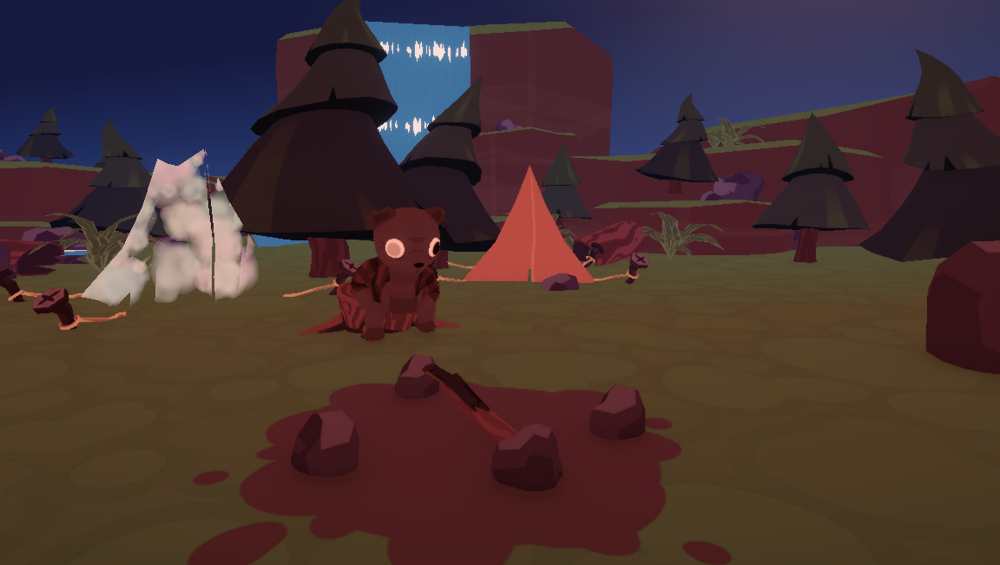
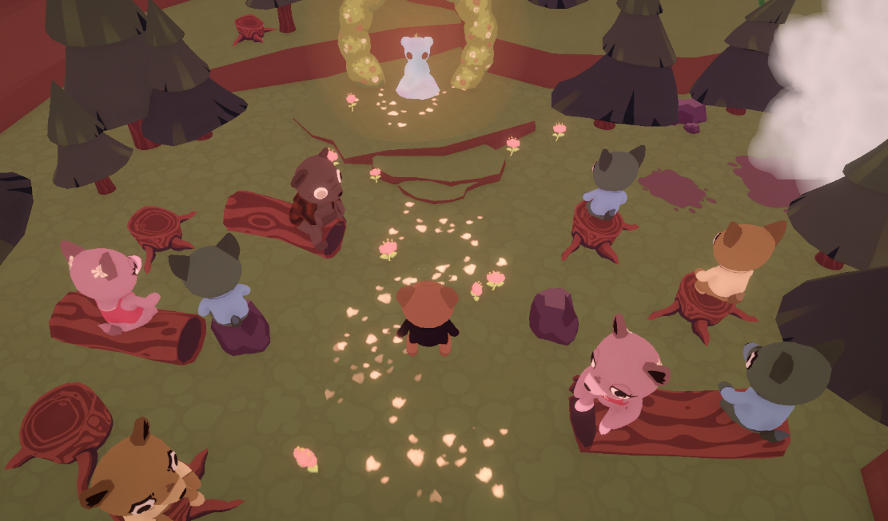
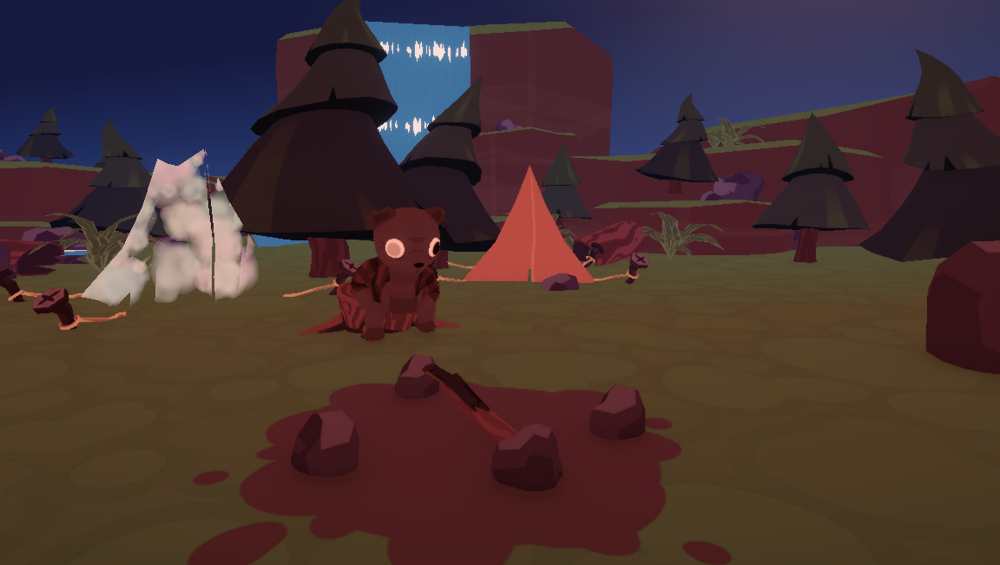
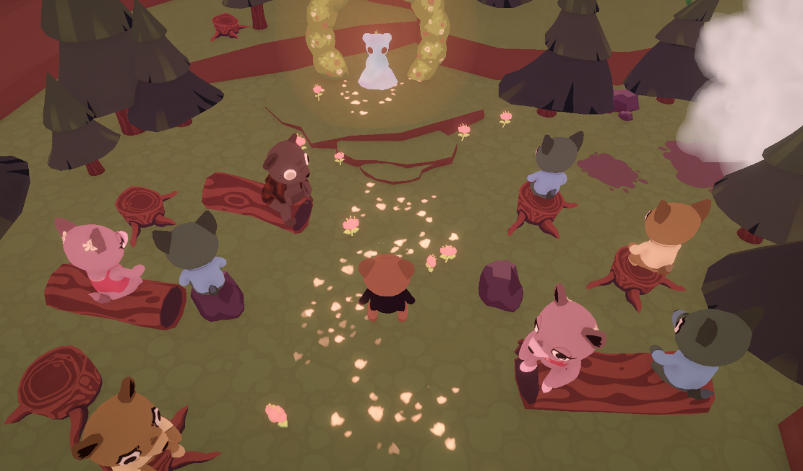

Who Are You Again? — A Memory Exploration Game
Who Are You Again? is an exploration and puzzle game where each photograph becomes a 3D memory. You explore these moments through environmental storytelling, piecing together the fading memories of a father as time, faces, and years begin to blur.
As you uncover fragments of the past, you move through a dreamlike space between reality and memory, discovering the emotional bond between a father and his son — a connection that persists even as identity begins to slip away.
The game emphasizes atmosphere, mood, and subtle narrative delivery through interactive objects, environmental puzzles, and transitions between memories.
Play it on itch.io: Who Are You Again?
My Contribution to the Project
For Who Are You Again? I worked on:
- Visual Effects to enhance the emotional and dreamlike tone of each memory.
- Post-processing (color grading, bloom, depth of field, vignette) to give each scene a “memory-like” feel.
- Programming, including interaction logic and scene transitions between memories.
- Interactive object behaviors connecting puzzles to narrative progression.
- Memory transition effects using fog, blur, and lighting-based atmosphere cues.
- Technical scene setup for fixed-camera 3D spaces based on photographs.
Gameplay & Visual Showcase
 



Gameplay Features
- Explore small, detailed 3D environments based on real photographs.
- Interact with symbolic objects that reveal pieces of the father’s story.
- Solve environmental puzzles tied to emotions, memories, and time loss.
- Experience narrative purely through exploration — no dialogue needed.
About the Game
Built for the Unity 20th Anniversary Game Jam with the theme “Timeless.” “Who Are You Again?” explores memory, identity, and emotional connection through carefully crafted scenes inspired by real photographs. The game blends exploration and puzzles in a soft, poetic experience about moments that remain even when the mind fades.
Development Team
- Programmer and Technical Artist: me
- Programmer: Andrés Mayo
- Programmer: Egoitz Zubeldia
- Designer: Nelar
- Artist: Carmux
- Artist: nenepesaurio
Music & SFX
- Music by Blue Dot Sessions & Reeder
- Open book by manuelaurreaf — Attribution 4.0
- Footsteps on Dirt by IsmailBulbulia — Attribution NonCommercial 4.0
- Small Waterfall by InspectorJ — Attribution 4.0
Assets Modified From
- Sketchfab Asset
- Reworked models by nenepesaurio